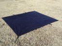
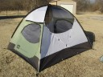
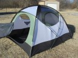
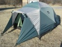
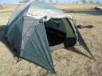
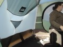
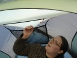
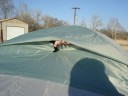

the Winnebago of tents (pics)
Finally had a chance to take pics of the tent. Check it.
Tent Footprint - like a small tarp fitted to the tent, with stake loops on the corners: 
Tent with the two diagonal poles set up: 
Tent with all four poles - two extras in the middle for additional stability: 
Tent with fly (the front flap is open here): 
Front of the tent - a fifth pole pulls the top of the fly away from the tent on one side to create a porch-like addition: 
Inside of the tent (two pockets on the left side of the door and one pocket on the right side, and another pocket on the side of the tent): 
Top of the tent on the inside - April is opening one of the vents, and the “attic” shelf is above her shoulder: 
Top of the tent on the outside - the vents on the fly can be propped open: 
February 7th, 2006 at 1:45 pm
Love the tent!
Here’s a few hints from a seasoned camper:
If there is any chance of rain, make sure you rig the fly so that it doesn’t touch your main tent fabric anywhere. You should be able to peg the walls a few inches out from the main tent body, and even attach guylines to the white tabs to hold it out. Because of surface tension, if you have the main tent fabric and the fly touching you may develop a leak spot - not good.
If you have had to pack away your tent while it is still wet, unfold it and set it up at the soonest opportunity so it can dry out. Wet tents can begin to smell and grow mildew if not dryed out.
If you are camping and it is raining a lot, check with your landowner and ask if its o.k. to dig a small trench, say 3″ wide and 2″ deep a couple of feet out from your tent perimeter, with a runoff channel at the lowest point to carry the accumulated rainwater away from your tent. This will help to keep the ground under the tent from getting waterlogged.
When pitched on a campsite, personalize the outside of your tent with a flag or banner. It reduces the opportunity for somebody to “check out” your tent contents because they, um, thought it was their tent by mistake …